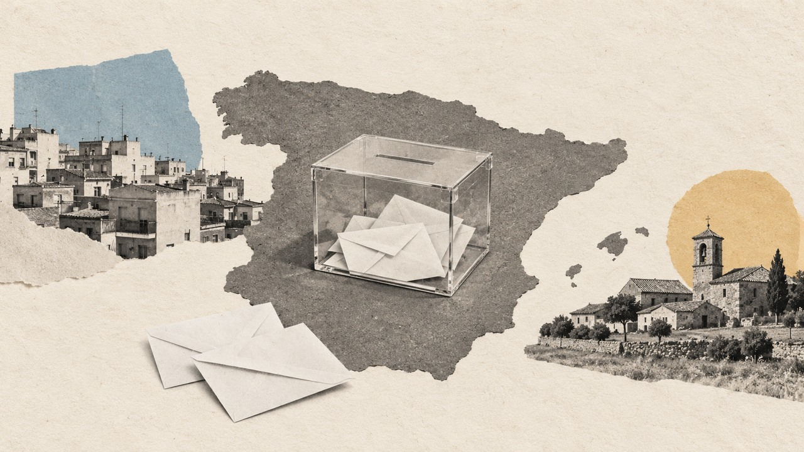

Actualidad · Crónica del sábado · España
Un voto en Santa Cruz de Mudela, 101 en Cantabria, 7.097 en Palencia: la semana en que el 29N se contó en márgenes
A cinco semanas de las elecciones, la campaña ha pasado por Palencia, Badalona, Ceuta, Ferrol, el plató de La Revuelta y Teruel. En casi todas las paradas, lo que decide no es el tamaño de los bloques, que apenas se mueve desde 2015, sino unos pocos cientos de votos en el sitio justo.
Por Nacho G. del Álamo ·

Cada párrafo lleva una etiqueta: dato (cifra comprobable con las fuentes), patrón (relación que se repite, sin afirmar la causa), hipótesis (explicación posible, sin dos fuentes independientes) o contexto (hechos y declaraciones publicados por otros, enlazados). Cómo verificamos
ContextoEl lunes por la mañana, en Palencia, el PSOE se quedó sin candidatos al Congreso. La víspera, la Comisión Federal de Listas había cambiado al número uno que había votado la provincia, Álvaro Bilbao, por la diputada María Luz Martínez Seijo. Bilbao había salido de la ejecutiva provincial con 77 votos a favor y una abstención, según El Español. Renunciaron los otros dos titulares y los dos suplentes. La alcaldesa de la ciudad, Miriam Andrés, que es también la secretaria provincial del partido, lo resumió en X con una frase que no necesita traducción:
«Os habéis pasado la voz de la militancia por el forro.»
DatoPalencia reparte tres diputados. En 2023 el PSOE sacó 33.613 votos y el PP, 40.709, y el tercer escaño fue para el PP. Para quitárselo, a los socialistas les habrían hecho falta 7.097 votos más. En abril de 2019, el único año de este siglo en que fueron el partido más votado de la provincia, se quedaron a 478.
ContextoSiete mil votos es la cifra más grande de esta crónica. Todas las demás son más pequeñas. Esta es la semana del 17 al 23 de octubre contada desde los mapas: siete días, 64 piezas publicadas en esta sección y una idea que atraviesa casi todas. Lo que el 29N vaya a decidir lo va a decidir poca gente, en sitios concretos, y a menudo por la mínima.
Badalona: el alcalde que en mayo vale el triple
ContextoLa semana empezó el sábado 17, cuando el PP anunció que Xavier García Albiol será su cabeza de lista por Barcelona, sin dejar la alcaldía de Badalona. El lunes ya grababa vídeos. En el primero de su serie #AlbiolSinFiltros habló de inmigración y de Francia, según Europa Press:
«Si no tomamos medidas y ponemos freno a la política de Pedro Sánchez y sus socios de dejar entrar a todo el mundo, que todo el mundo es bueno, acabaremos como Francia»
DatoBadalona votó dos veces en dos meses en 2023, y eso permite medir cuánto pesa su nombre. En las municipales de mayo, la lista de Albiol sacó el 55,7% y fue la más votada en 145 de las 149 secciones censales de la ciudad. En las generales de julio, el PP se quedó en el 16,6% y no ganó en ninguna. Es el voto dual llevado al extremo. En 2019 pasó lo mismo: 37,6% en mayo y 9,4% en las generales de noviembre.
PatrónSección a sección, los dos resultados se mueven juntos, con una correlación de 0,82: donde Albiol es más fuerte, el PP también lo es. Pero en todas las secciones de la ciudad, el PP de las generales sacó menos de la mitad que el alcalde. La pregunta del fichaje es si algo de ese voto de alcalde viaja con él a la papeleta del Congreso.
Ceuta, vista desde el Despacho Oval
ContextoEl martes 20, en la Casa Blanca, en un acto sobre fraudes en Minnesota, Donald Trump se acordó de España. Lo contó EFE:
«En el caso de Francia y de toda Europa, fíjense en lo que ocurrió en España: el país fue invadido de forma repentina y masiva. Llegaron por decenas de miles, entraron a raudales en España, y el país no está haciendo nada al respecto»
ContextoLa entrada masiva más reciente es la de Ceuta, los días 30 y 31 de julio, cuando miles de personas llegaron desde Marruecos por el espigón de El Tarajal y a nado. El ministro del Interior, Fernando Grande-Marlaska, cifró las entradas en unas 72.000, y dijo que unas 70.000 ya habían salido de la ciudad, según El Faro de Ceuta.
DatoLa otra entrada, la que no sale en los telediarios, la cuenta el INE. El 1 de enero de 2019 vivían en España 6.549.309 personas nacidas en el extranjero; el 1 de enero de 2026, 10.036.888. Solo en 2025 fueron 572.678 más, unas 1.569 al día. Y el cruce con el voto no dibuja lo que el discurso supone: en los municipios donde más creció su peso, Vox sacó el 12,3% en 2023; donde menos creció, el 13%. A principios de mes ya habíamos visto que Vox saca casi lo mismo donde uno de cada tres vecinos nació fuera que donde casi nadie lo hizo, y esta semana, con el CIS, que donde más preocupa la inmigración, más votó Vox, salvo en Cataluña.
Ferrol y la hucha de las pensiones
DatoEn Ferrol, la ciudad de los astilleros, uno de cada tres euros que entran en las casas llega de la Seguridad Social: las pensiones eran en 2023 el 33,9% de la renta de sus vecinos, según el atlas de renta del INE. Aquel julio, Ferrol votó al PP (38,7%) y al PSOE (29,4%). A Vox, uno de cada dieciocho votantes.
ContextoEsta semana, esos euros fueron el centro de la discusión. Feijóo había zanjado el debate en su propio partido el día 15, en Bruselas, según Europa Press: «Las pensiones son innegociables y ya; se acabó». El martes, la portavoz del Gobierno, Elma Saiz, le contestó con el Fondo de Reserva, según Infobae:
«Para hablar de agujeros en el bolsillo de los pensionistas y en las cuentas de la Seguridad Social desde luego es un especialista el señor Feijóo»
PatrónLos dos prometen lo mismo, subirlas con el IPC, y se pelean por quién lo cumplirá. La razón cabe en una cifra: en las secciones censales donde más pesan las pensiones en la renta, PP y PSOE se llevaron juntos el 72,8% del voto, casi diez puntos más que donde menos pesan. Es el último reducto del bipartidismo, el de los barrios de jubilados donde Vox nunca ha llegado al 12%, en un censo con 10,2 millones de electores de 65 años o más. Y no vota en bloque: en las más pobres de esas secciones gana el PSOE, y en las más ricas, el PP.
La Revuelta: dos países con la misma edad
ContextoEl jueves por la noche, Pedro Sánchez se sentó en La Revuelta, el programa de David Broncano en La 1. Hora y media, camisa remangada y un ajedrez de regalo. Cuando el presentador le preguntó por los insultos, el presidente se acordó de los pensionistas, según RTVE:
«Se acuerdan de mi madre, yo también de las suyas cuando subo las pensiones o el salario mínimo»
DatoPero quien ve La Revuelta es más joven, y entre los jóvenes hay dos países. En los nueve últimos barómetros del CIS, 37.191 entrevistas, los hombres de 18 a 34 años dan a Vox el 24,6% de voto más simpatía y al PSOE, el 13,3%. Las mujeres de la misma edad, al revés: el 28,5% al PSOE y el 14,1% a Vox. Entre los mayores de 75, el PSOE gana casi nueve a uno. Esa misma semana publicamos, con el CIS, que donde más preocupa la vivienda, más se votó a Sumar, y otra pieza mostraba que Vox no gana en los barrios obreros: saca casi lo mismo donde viven peones que donde viven directivos.
Teruel: la izquierda que se retira
ContextoEl miércoles, Chunta Aragonesista decidió que su coalición no presentará lista al Congreso por Teruel. Era la última pieza de un rompecabezas que dibujamos aquí: Frente Amplio y Podemos solo irán juntos en cinco provincias. Su presidente, Jorge Pueyo, lo explicó con una fórmula de manual: «Evitar la dispersión del voto y hacer todo lo posible para conseguir una mayoría progresista», según Público. Izquierda Unida, socia de la misma coalición, mantendrá la suya.
«Es una mala decisión, no es defender a la izquierda, es no dar opción a la gente a votar a la izquierda»
DatoDesde 1977, ninguna lista a la izquierda del PSOE ha sacado diputado por Teruel. Solo una vez tuvo los votos: en diciembre de 2015, Podemos sacó 11.806 y la lista de IU y CHA, 3.883. Juntas, 15.689, más que los 14.112 con los que el PP ganó el tercer escaño. Fueron por separado, como en toda España aquel año. Y en 2023, aunque todos los votantes de Sumar hubieran votado al PSOE, a los socialistas les habrían faltado 235 votos para ese escaño. En Teruel, uno de cada tres votos no eligió a nadie en 2023.
El filo: de un pueblo de La Mancha a la mesa de un ministro
DatoSanta Cruz de Mudela es un pueblo de vino y de paso, al sur de Ciudad Real. El 23 de julio de 2023 votaron allí 2.313 personas, y cuando terminó el recuento el PP tenía 874 votos y el PSOE, 873. No fue el único: en 2023, en 185 municipios el más votado ganó por un voto, y en otros 94, como Mota del Cuervo (1.243 a 1.243), los dos primeros empataron.
DatoUn pueblo ganado por un voto no da un diputado: los votos se suman en la provincia. Pero el reparto provincial también tiene su filo. Con los votos de 2023 y los escaños de 2026, seis escaños habrían cambiado de partido si menos de mil personas hubieran cambiado su papeleta. En Cantabria bastaban 101 votantes de Vox que hubieran votado al PP. Con menos de 5.000, hay 32 escaños en el aire, y 17 provincias donde el último se resolvió por menos de esa cifra.
ContextoLa politóloga Annick Laruelle, investigadora de Ikerbasque en la Universidad del País Vasco, lo explicaba en 2019 sin mirar a ningún pueblo en concreto:
«La falta de proporcionalidad del sistema español no se debe tanto a la regla d’Hondt (o al umbral electoral) sino al elevado número de pequeños distritos.»
DatoEl filo más caro de la semana estuvo en los tribunales. El Constitucional no admitió el miércoles el recurso del Defensor del Pueblo, y el Supremo mantiene sin voto el 29N a 163.020 nacionalizados por la ley de nietos. El jueves dio a los ministros Félix Bolaños y José Manuel Albares hasta el 28 de octubre a las 15 horas para entregarle la lista nominal de afectados, según The Objective. En 2023, el voto de fuera ya cambió un escaño: antes de sumarlo, el último diputado de Madrid era del PSOE por 120 votos de cociente; con él, pasó al PP.
| Dónde | La noticia de la semana | El margen |
|---|---|---|
| Santa Cruz de Mudela | Los pueblos que se ganan por un voto | 1 voto entre PP y PSOE |
| Cantabria | Los escaños en el filo del 29N | 101 votantes para el quinto escaño |
| Madrid | El Supremo mantiene sin voto a 163.020 nacionalizados | 120 votos de cociente antes del voto exterior |
| Teruel | CHA retira su lista al Congreso | 235 votos al PSOE, aun con todo Sumar |
| Palencia | Dimite la lista del PSOE | 7.097 votos para un segundo diputado |
| Badalona | Albiol, cabeza de lista del PP | Del 55,7% en mayo al 16,6% en julio |
Once millones arriba, once millones abajo
ContextoIván Redondo, el que fuera jefe de gabinete de Sánchez, tiene una cifra para estas elecciones y la ha repetido estos días en televisión y en una conferencia en Alicante. La escribió en su cuenta de X:
«Hay una ecuación electoral que conviene tener presente: PP + VOX. Cuando VOX está en el 20%, el PP suele situarse en el 27% o el 28%. No puede estar en el 33%. El bloque de la derecha lleva en torno a 12 millones de votos desde 2011, los que sumaban Rajoy y Rosa Díez»
DatoLos votos están contados, y los 12 millones solo existieron una vez, en 2011. Desde 2015, PP, Vox, Ciudadanos y UPyD han sumado entre 10,45 y 11,33 millones de votos. Pero Redondo acierta en lo que importa: el bloque es sorprendentemente estable. En cinco elecciones generales se ha movido dentro de una franja de 900.000 votos, mientras por dentro nacía Vox y desaparecía Ciudadanos. Cómo están hoy las cosas lo cuentan las encuestas, actualizadas cada día, con el CIS aparte, y así quedó el mapa la última vez.
HipótesisSi los bloques apenas cambian de tamaño, lo que se mueve es otra cosa: quién se queda en casa, a qué papeleta va cada voto dentro del mismo bloque y en qué provincia cae. Esa es la lectura que dejan juntas las piezas de esta semana, y es una hipótesis: ninguna de ellas mide qué votará nadie el 29N.
ContextoQuedan cinco semanas. En Santa Cruz de Mudela, el 23 de julio de 2023, habría bastado con que un solo votante del PP se hubiera quedado en casa para que el pueblo amaneciera empatado.
La semana, pieza a pieza
ContextoPara quien quiera leer más despacio, estas son las piezas de la semana de las que sale esta crónica, y algunas más, agrupadas por tema. Los temas del sitio las reúnen todas: escaños y sistema electoral, renta y voto, inmigración, participación, pueblos e historia electoral.
Listas y pactos. Palencia se queda sin lista del PSOE · Albiol y Badalona · La unidad de la izquierda canaria · Delgado contra Montero en Madrid · PSOE y Frente Amplio, juntos al Senado · PP y Vox negocian el Senado · CHA se retira en Teruel
Los temas de la campaña. Trump y la «invasión» · La hucha de las pensiones · Los empleados públicos · El salario mínimo, provincia a provincia · El aborto «en la pública» · Sánchez en La Revuelta · Abascal y Galicia
Quién vota qué. Los barrios de autónomos · Los barrios de jubilados · Los barrios de rentistas · Vox y los barrios obreros · Despachos y oficios · El PP frente a Junts y el PNV
Los márgenes. Seis escaños por menos de mil votantes · Los 185 pueblos ganados por un voto · Empates y unanimidades · El voto exterior y los nietos · Dónde están los nietos · Los 12 millones de Redondo
Y la historia. El mapa de 1936 y el de hoy · Las mujeres que votaron en 1933 · Los pueblos que no han cambiado desde 1936 · Los pueblos de colonización
Explora el mapa por sección · Todas las piezas de Actualidad
Método y fuentes
- Qué se compara
- Los márgenes de las generales y municipales de 2023 en los lugares de los que se habló durante la semana, con las cifras de las piezas de Actualidad publicadas entre el 17 y el 23 de octubre.
- Límites
- Es una pieza de resumen: cada cifra procede de una pieza ya publicada, enlazada en el texto, donde se explica cómo se calcula. Los márgenes no son comparables entre sí (un voto en un municipio, votantes que cambian de papeleta en una provincia, cocientes D'Hondt) y ninguno predice el resultado del 29N. La lectura conjunta del último apartado es una hipótesis.
- Cómo se calcula
- Cada cifra, como se explica en su pieza de origen. Cifras reproducibles con los scripts del expediente de la pieza. Metodología de Actualidad · Metodología del Atlas
- Fuentes
- Ministerio del Interior, resultados de las generales de 2015 a 2023 y de las municipales de 2023
- INE, Estadística Continua de Población
- INE, Atlas de Distribución de Renta de los Hogares
- CIS, barómetros de diciembre de 2025 a octubre de 2026
- El Español, la lista del PSOE de Palencia renuncia (19-10-2026)
- Europa Press, Albiol y la inmigración (19-10-2026)
- EFE, Trump dice que España fue «invadida» (20-10-2026)
- El Faro de Ceuta, Marlaska y las 72.000 entradas
- Europa Press, Feijóo y las pensiones (15-10-2026)
- Infobae, Elma Saiz y la hucha de las pensiones (20-10-2026)
- RTVE, las frases de Sánchez en La Revuelta (23-10-2026)
- Público, CHA no se presenta al Congreso por Teruel
- The Objective, el Supremo y la lista de afectados por la ley de nietos (23-10-2026)
- Annick Laruelle en Campusa (UPV/EHU), 24-5-2019
- Iván Redondo, cuenta de X
- Autoría
- Nacho G. del Álamo
- Revisión de datos y texto
- Nacho G. del Álamo, 24 de octubre de 2026
- Publicado · actualizado
- 24 de octubre de 2026 · 24 de octubre de 2026
- Correcciones
- Ninguna.
Serie «Camino al 29N»: 93 piezas
- CHA se retira en Teruel: la única vez que la izquierda tuvo votos para un escaño fue en 2015, y fue dividida
- Huelva, Almería y Jaén: más de la mitad de sus asalariados cobró en 2024 menos de un salario mínimo al año
- Los 12 millones de la derecha que cita Iván Redondo solo existieron una vez: en 2011
- Feijóo y el aborto «en la pública»: 77% en Galicia, 0,5% en Madrid
- Mota del Cuervo, 1.243 a 1.243: los pueblos del empate y los del voto unánime
- Santa Cruz de Mudela, 874 a 873: los 185 pueblos que se ganaron por un voto
- El otro Clásico: en los barrios de renta media, el PP saca el triple de votos en Madrid que en Barcelona
- Así queda el mapa electoral de España antes del 29N: el PP ganó en 40 provincias y el PSOE, en 10
- Quién va con quién el 29N: Frente Amplio y Podemos, separados en 47 provincias; en 2015, juntos habrían sacado 15 diputados más
- Las provincias que deciden el 29N: 32 escaños se movían en 2023 con menos de 5.000 votantes, y el PP defiende 13
- Estás aquíUn voto en Santa Cruz de Mudela, 101 en Cantabria, 7.097 en Palencia: la semana en que el 29N se contó en márgenes
- Las dos calles que parten Barcelona: la Diagonal en el voto a la derecha, la Meridiana en el independentismo
- Quién vota qué, barrio a barrio: el PP sube 21 puntos donde pesan las rentas del capital, el PSOE 15 donde abundan los peones y Vox solo se mueve con los jubilados
- A seis semanas del 29N: en 534 barrios de España no votó ni la mitad del censo, y tres de cada cuatro están entre los más pobres
- Ante el 29N: del Polígono Sur a la Cañada Real, en 78 de los 93 barrios donde más pesan las ayudas sociales no votó ni la mitad
- Con el PSOE andaluz en mínimos: Sevilla, Jerez y otros 170 municipios que votaron a la izquierda en todas las generales de 1977 a 2008 dieron en 2023 más votos a PP y Vox
- A cinco semanas del 29N: en la calle de los Hermanos García Noblejas, en Madrid, PP y PSOE se cambian de acera 12 veces, y el PP siempre gana en el lado con más renta
- Vox busca el voto de los barrios obreros: en la Región de Murcia, nueve de cada diez secciones pobres ya votan más a PP y Vox que a PSOE y Sumar
- Sevilla vota por barrios y Lugo, mezclada: el índice que mide qué capitales están partidas por el voto
- El voto a Vox de las mujeres jóvenes se ha triplicado desde 2023, y la izquierda ha perdido 13 puntos entre ellas
- Ver las 93 piezas de la serie
Más datos: elecciones generales del 29N de 2026: fecha y escaños por provincia · más piezas sobre escaños y sistema electoral.
Sigue leyendo
- EncuestasEncuestas de las elecciones generales del 29N: todas, con sus escaños, actualizadas cada día
- Serbia, distrito a distritoVučić ganó en los 25 distritos de Serbia en 2023; los estudiantes le han ganado en 18 y en Zaječar el recuento va por 31 votos
- Brasil, estado a estadoLula pasó de perder por 2,2 millones de votos a ganar por 4,4: en el mapa de Brasil solo Minas Gerais cambió de color
- Israel votaSolo una televisión le daba la mayoría a Netanyahu
- ActualidadTodas las piezas de actualidad
- AtlasAtlas de las anomalías electorales